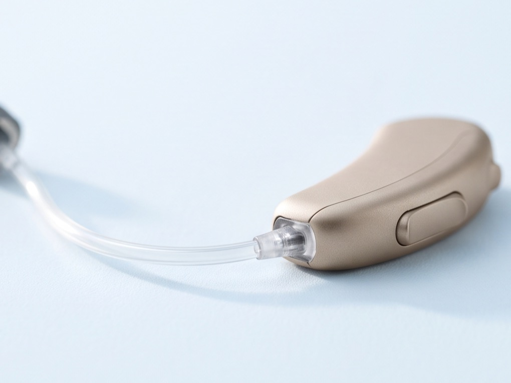
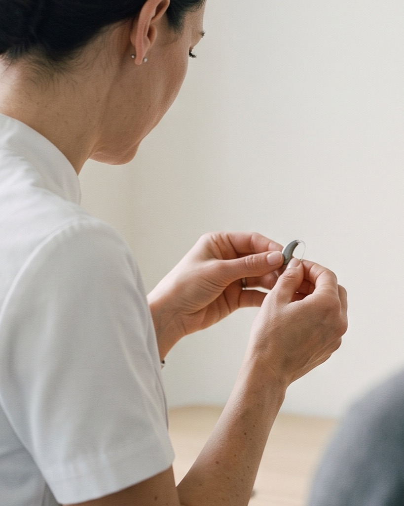
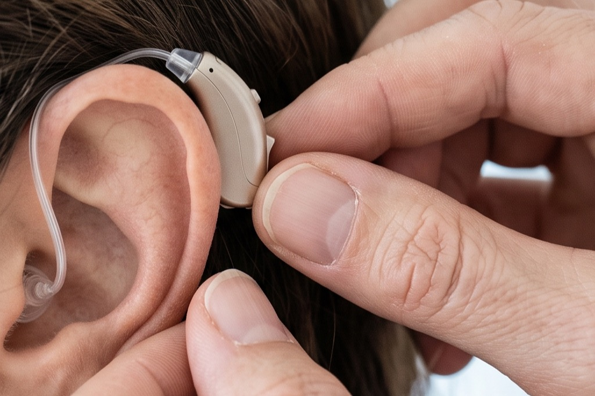
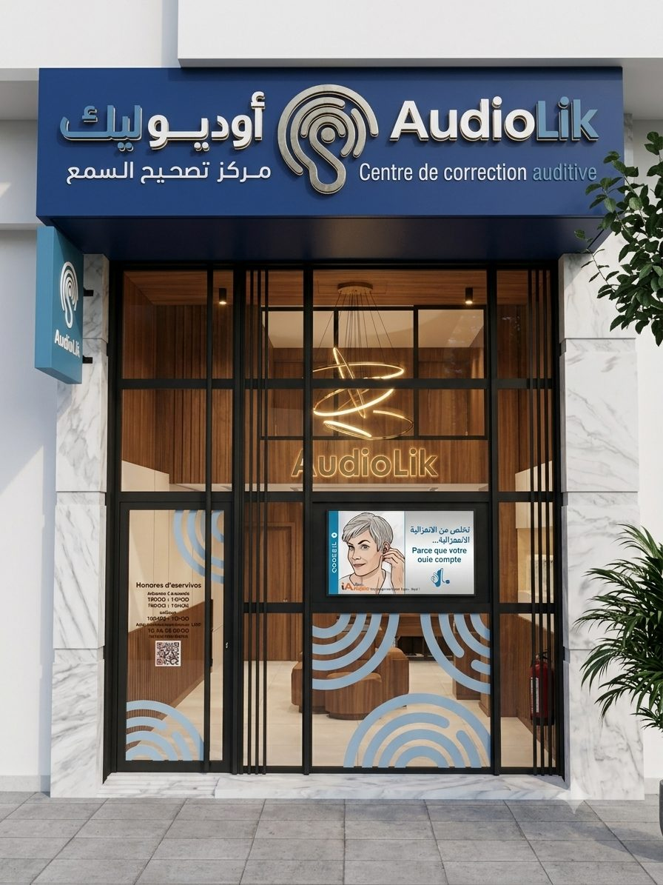
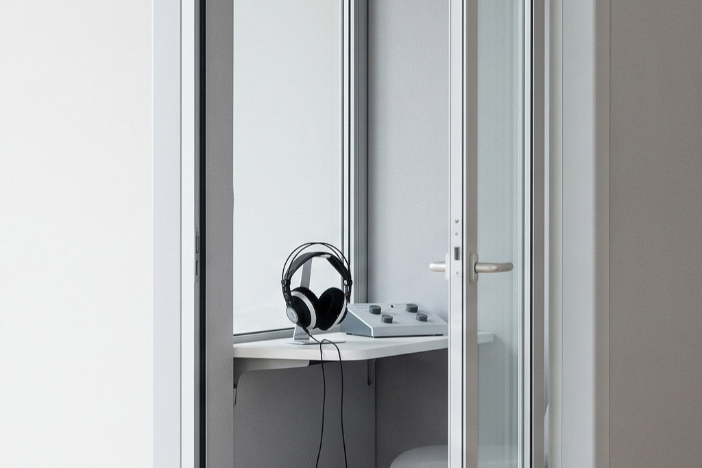

The most common
Receiver-in-canal
A slim housing behind the ear, a tiny receiver in the canal. Natural sound, an open ear, all but invisible from the front.
We measure exactly what you no longer hear, then bring it back, one adjustment at a time.

Free hearing test By appointment, no obligation.
Hearing loss settles in slowly. Loud sounds are not the first to go: nuance is, along with consonants, higher voices, and conversation in a noisy room.
You turn the television up louder than everyone else.
In a café you follow the conversation, then lose the thread.
People tell you that you ask them to repeat themselves. Often.
Phone calls have become hard work, especially with strangers.
A ringing or buzzing keeps you company when everything is quiet.
Higher voices, those of children and women, sound blurred.
Three or more? An assessment settles the question in under an hour.
Online check
Six questions about your daily life. Nothing is sent anywhere: the score is computed in your browser and disappears when you close the page.
This questionnaire is a guide, not a diagnosis. It replaces neither an assessment at the centre nor the opinion of an ENT doctor.
A hearing aid is not sold, it is fitted. These are the five stages we go through together.

Otoscopy, then pure-tone and speech audiometry. We measure what you hear, but above all what you understand. The two do not always match.
We compare two or three devices suited to your audiogram, your daily life and your budget. Not a catalogue, a reasoned shortlist.
You leave wearing the devices and test them where it actually counts: at the table, on the phone, at the market, at the mosque.
The brain has to relearn how to process sounds it had stopped receiving.
Hearing checks, cleaning, filter changes, repairs. A well-maintained device lasts years longer.
Solutions
There is no single best hearing aid, only the one that matches your loss, your ear canal and your life.

The most common
A slim housing behind the ear, a tiny receiver in the canal. Natural sound, an open ear, all but invisible from the front.
The most invisible
Custom-moulded to your canal. Nothing sits behind the ear.
The most powerful
Robust, easy to handle, long battery life. The reference for severe loss and for children.
The most practical
No more batteries. Calls and television streamed straight into the devices.
Prevention
Moulded plugs for sleep, swimming, music or the worksite.
Everyday
Remote microphone, TV streamer, batteries, drying capsules and replacement domes.
A hearing aid is a five-year decision, not an invoice. What costs money is not the hardware: it is the time spent matching it to your hearing, then tuning it until you stop thinking about it.
You leave the assessment with an itemised quote, and nothing is signed on the day. Take the time to compare, here or anywhere else.
Prices depend on the level of technology and on your hearing loss. They are given at the centre, after the assessment.
A human-scale centre. The same person from the first assessment to the last adjustment, because a successful fitting rests on a continuing relationship.


Contact
Call the centre during opening hours and reception will book you in. Outside those hours, send the message already written for you on WhatsApp, and we reply when the centre reopens.
Option 1 · Phone
Reception books the appointment with you and answers your questions there and then. The most direct route while the centre is open.
Closed right now
05 22 39 37 98Line open Monday – Friday 09:00–13:00 and 14:30–18:30 · Saturday 09:00–13:00
Fastest right nowOption 2 · WhatsApp
The message is already written: all you have to do is press send. We reply as soon as the centre reopens.
Any time, day or night
Open WhatsApp« Hello, I would like to book a hearing assessment. What are your next available slots? »
Fastest right nowOr come and see us 106B Rue Al Jounaid, Casablanca Get directions
Describe your situation in two lines: the reason, and a time that suits you.